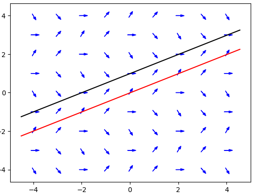
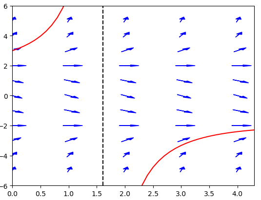
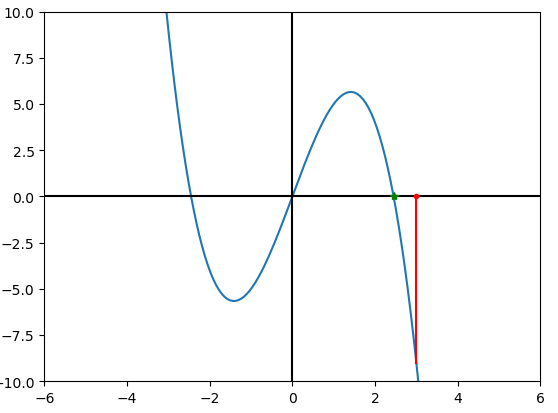

Table of Contents
Long Term Behavior and Population Models
Discussion
In many applications, the most important issue is where you end up and not how
you got there. From a mathematical point of view, we can express this by saying
that if $x(t)$ is the solution to a differential equation, we may be interested
mainly in what we can say about $x(t)$ for large $t$. In the Autonomous Equations lab, you saw how
you could quickly recognize limiting behavior geometrically for autonomous equations.
This section covers a variety of issues that can come up when trying to quickly recognize
long-term behavior from the geometry, in both autonomous and non-autonomous
situations, as well as some applications to populations.
Fences
A "fence" is a curve that can't be crossed in at least one direction by any solution
of the differential equation. We discovered earlier that solutions to nice first order
differential equations do not cross, so any integral curve is a fence. But often you
can recognize a curve other than the solution can only be crossed in a single direction.
For example, consider the differential equation
$$
\frac{dx}{dt}=2\cos\left(\frac{\pi}{4}(2x-t)\right)
$$
whose slope field is graphed below, along with the two lines $x=(1/2)t$ (graphed in red)
and $x=(1/2)t+1$ (graphed in black).

The red line, $x=(1/2)t$ is a (lower) fence for the differential equation. Along this line,
the slope field always has slope $2cos(0)=2$ as you can see from the graph. Since the line
$x=(1/2)t$ has slope $1/2 < 2$, that means any integral curve following the slope field must
move from below the red line to above the red line, and so the red line can only be crossed
from below. Once a solution is above the red line, then it can never get below it again.
On the other hand, the black line, $x=(1/2)t+1$ is an (upper fence). Along this line the slopes
are all $2cos(\pi/2)=0$ as you can see from the graph. Since the black line has slope $1/2$, that
means any integral curve following the slope field must move from above the black line to below, and
so once a solution is below the black line, it can never get back above again. In analytic terms, we
have that if $x(t)$ is a solution to the differential equation and $t_0/2 < x(t_0) < t_0/2+1$, then
$t/2 < y(t) < t/2+1$ for all $t > t_0$. So if you were in a situation where estimating too high was
much worse than estimating too low, you could safely estimate $x(t)$ by $t/2$ and be sure you were not
too high and also that you were off at most 1 to low. Or if you cared more about the ratio $x/t$, you
would have $1/2 < x/t < 1/2 + 1/t$, and you could conclude $\lim_{t\to\infty} x/t = 1/2$. Actually
solving the initial value problem gets rather messy, so being able to quickly get a reasonable estimate and/or
some quick checks to be sure you didn't make an error along the way can be very helpful.
Explosions
Consider the autonomous differential equation
$$ \frac{dx}{dt}=\frac{x^2-4}{4}, \qquad x(0)=3. $$
Since this is an autonomous equation, you can use the techniques of the previous section to recognize
that the solution will increase without bound. It is tempting to write that $\lim_{t\to\infty}x(t)=\infty$,
but that is not true! In fact, if you solve the equation (being autonomous, it is of course separable), you obtain
$$ x(t)=\frac{10+2\exp(t)}{5-\exp(4t)}. $$
And if you take the limit of this you get $\lim_{t\to\infty}x(t)=-2$. So what went wrong? The issue is that the
solution doesn't converge to $\infty$ in infinite time. It explodes to $\infty$ in finite time, with $x(t)$ having
a vertical asymptote at $t=\ln(5)$. Note that since the solution to a differential equation must satisfy the
equation at every point, and the solution can't satisfy the equation at $t=\ln(5)$ since it is undefined , this is another
situation where the solution to a differential equation only exists for a limited interval. These situations are
sometimes called "explosions." While a physical system shouldn't be able to reach infinity, if, for example,
you are modeling the number of free neutrons in certain nuclear reactions, an explosion is exactly what will actually
occur.

Exponential Growth
Consider a bacterium. It reproduces by fission, that is every so often
it splits into two new bacteria. The two progeny then
undergo split into four bacteria sometime later. This process
continues indefinitely. We represent this situation by saying that if there
are $p$ bacteria now, we will add about $rp$ new bacteria every hour where $r$
is a constant of proportionality called the growth rate.
Or in the standard calculus phrasing, the rate of change of $p$ is
about $rp$ per hour, and if we start with $p_0$ bacteria we get the initial
value problem
$$ \frac{dp}{dt}=rp,\qquad p(0)=p_0 $$
where $p$ is the population of bacteria and $t$ is time in hours with the
present time
being set to $t=0$. This is a separable first order differential equation and
we can solve it to find
$$
p=p_0e^{rt}.
$$
Hence the name exponential growth. The graph of population vs. time for this
model is given below.
 Of course, the "growth" rate is negative we get exponential decay instead of
exponential growth. That might not be reasonable in some situations, but it
is a reasonable model for the population of Carbon-14 molecules in fossil materials. One of
the nice features of population dynamics is that it can be applied to many
different sorts of populations, from rabbits to U-235 nuclei.
Of course, the "growth" rate is negative we get exponential decay instead of
exponential growth. That might not be reasonable in some situations, but it
is a reasonable model for the population of Carbon-14 molecules in fossil materials. One of
the nice features of population dynamics is that it can be applied to many
different sorts of populations, from rabbits to U-235 nuclei.
Logistic Growth
You may have noticed that in the preceeding model, the population grows to
$\infty$. Given a single bacterium, you should grow a colony the size of the
earth in a matter of days. Of course this doesn't happen. The previous model
provides a model of the "birth" of new individuals but makes no allowance
for the death of individuals. Bacteria do not usually die of old age, but they
do die from
competition for resources. We add this to the model by saying the rate of
deaths in the population is proportional to the likelihood of
contacts between two individuals (which is usually assumed to be proportional
to $p^2$). This leads to the model
$$
\frac{dp}{dt}=rp-kp^2=rp(1-(k/r)p),\qquad p(0)=p_0
$$
where $k$ is a constant of proportionality. This is also a separable equation
(as all the equations in this section will be) but it is easiest to analyze it
using the ideas of the previous section rather than trying to solve the
equation directly. The equilibrium points of the equation are at $p=0$, and
$p=r/k$.
The equilibrium point at $p=0$ is unstable while the equilibrium point at $p=r/k$ is
stable. $r/k$ is called the carrying capacity of the model.
So the population should increase to a level $p=r/k$ and then stay there.
This is much more in line with what we expect to happen to a population of
bacteria.
The graph of population vs. time for this
model is given below.

Logistic Growth With Threshold
The logistic model doesn't allow for a species to go extinct, which suggests
we might want a different model in some circumstances. The exponential and logistic growth models
started with assumption that births are proportional to population and deaths result just from
competition. But for many animals (rabbits, foxes, us), births come about from the interactions
of two individuals, while a certain percentage will die natural deaths in addition to those that
die when they can't obtain needed resources due to competition. Since interactions of two individuals
are presumed to have positive effects, we subtract a term proportional to the interactions of three
individuals ($p^3$) to model competitive pressures. This gives the model
$$
\frac{dp}{dt}=-cp+rp^2-kp^3,\qquad p(0)=p_0.
$$
Now we have three equilibrium points (assuming $r^2>4kc$), $0$,
$p_u=(r-\sqrt{r^2-4kc})/(2k)$ and $p_s=(r+\sqrt{r^2-4kc})/(2k)$. 0 is a
stable
equilibrium point. $p_u$ is an unstable equilibrium point and is called the
threshold
as in the previous example. $p_s$ is a stable equilibrium point, called the
carrying capacity as in logistic growth. So if the populations
falls below the threshold $p_u$ it dies out but otherwise it tends to the
level $p_s$. Looking at the graphs of the population vs. time, you should note
that the behavior above the threshold closely resembles the behavior of the
logistic growth model. For established populations, the logistic growth model
we established for bacteria is often used because it is simpler and has the
right general properties (and population dynamics is by no means as accurate a
subject as physics). Logistic growth with threshold is used in studying
populations in danger of extinction, such as blue whales.
The graph of population vs. time for this
model is given below.
 Of course, population models can get much more complicated, but this gives
a sense of the basic issues in modeling. You write the important "forces"
that affect the quantity of interest into a differential equation. For
population models, the forces are whatever affects births and deaths. But
the equation you get is meant to describe the situation, and depending on
what you want to know, it may not be necessary (or possible) to solve the
resulting equation to learn what you want from the model if you can read
off features of the solution, like the stable and unstable equilibria. In
managing a natural population for example
you might start with a simple logistic model, add an additional term for
"harvesting" (hunting or fishing for example), and ask how to harvest to
maximize the sustainable yield. Since you want things sustainable, that
means you are looking for a stable equilibrium, and that is easier to
determine graphically than by solving the equation. The homework includes
examples of this.
Of course, population models can get much more complicated, but this gives
a sense of the basic issues in modeling. You write the important "forces"
that affect the quantity of interest into a differential equation. For
population models, the forces are whatever affects births and deaths. But
the equation you get is meant to describe the situation, and depending on
what you want to know, it may not be necessary (or possible) to solve the
resulting equation to learn what you want from the model if you can read
off features of the solution, like the stable and unstable equilibria. In
managing a natural population for example
you might start with a simple logistic model, add an additional term for
"harvesting" (hunting or fishing for example), and ask how to harvest to
maximize the sustainable yield. Since you want things sustainable, that
means you are looking for a stable equilibrium, and that is easier to
determine graphically than by solving the equation. The homework includes
examples of this.
Paradigm (?)
In the sections where we went over how to solve specific problems, we could
give a paradigm to follow. But the material in this section is not about
mechanically solving a problem. It's about what we can recognize from a
differential equation graphically, and how we can use this in understanding
things like population growth. So we don't have a mechanical set of steps for
most of these sorts of problems. But one useful tool is to look at an
autonomous equation and recognize where you will end up given a starting
point. We can (and will) have a paradigm for that process.
Find the limiting values of $y(x)$ as $x\to\pm\infty$ for
$$ \frac{dy}{dx}=6y-y^3,\qquad y(0)=3. $$
"Limiting value" here should be taken to be $\infty$ or $-\infty$ if the
solution explodes in finite time.
Step 1: Draw a graph of $y'$ vs. $y$.

Step 2: Determine whether $y'$ is positive, negative, or zero at the initial point.
Looking at the graph above, we see that the graph is negative at $y=3$ as indicated
by the red line (remember since
this is a $y'$ vs. $y$ graph that $y$ is on the horizontal axis). You could also
compute $y'=6\times3 - 3^3 = -9$.
Step 3: For $x\to\infty$, move in the indicated direction to the nearest equilibrium (point where
the $y'$ vs. $y$ curve crosses the axis).
In this case, since $y'$ is negative, we move in the negative direction (to the left). The first
equilibrium we encounter is marked in green on the graph. Solving the equation $6y-y^3=0$, we find
this point is $y=\sqrt{6}$. So the limiting value as $x\to\infty$ is $\sqrt{6}$.
Step 4: For $x\to -\infty$, move in the opposite direction to the nearest equilibrium point.
Since this is asking about $x$ going back to $-\infty$, we have to move in the opposite direction,
which in this case is the positive direction (to the right). However in this direction we never
encounter an equilibrium point, so we never stop and our limiting value is $\infty$ (in this particular
case we actually explode to $\infty$ in finite time).
Randomly Generated Practice Problems
A randomly generated practice problem is below. Once you submit an answer, you will have a link to see the detailed
solution for the problem, as well as the option to generate a new problem.
©1994-2026 Andrew G. Bennett